Anonymized
Global Game Jam 2026 → Steam release / 2026 / Team Project
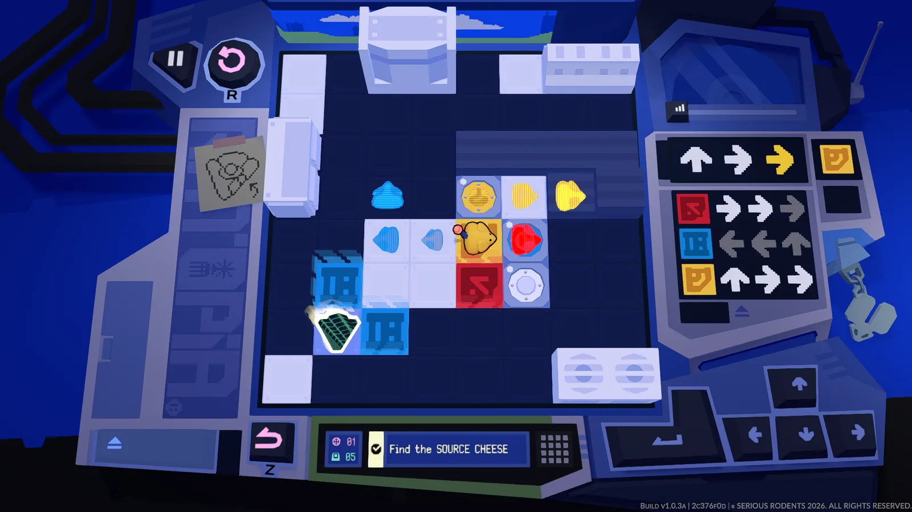
Play the official trailer (YouTube)A grid-based movement puzzle game that grew from an award-winning game jam entry into a full commercial release.
Play as a digital rat and hack your way into the retro-futuristic grid-based movement puzzle world of Anonymized, where you shift hues and dive layers deep in search of the one true Source Cheese.
- Team size
- 5 (4 at the jam)
- Engine
- Unity
- Timeframe
- Jan–Oct 2026
- Status
- Released Oct 2026, still updated
- Roles
- Gameplay Designer / Level Designer / UX Designer
SPECS
ROLE
AWARDS
- 1st Place - Game Dev Hub Bangkok (Global Game Jam 2026)
- Finalist - Rising Star Award, Bangkok International Digital Content Festival (BIDC) 2026
- Finalist - Rising Tide 4, Platformer, Puzzles & Arcade (Blue Ocean Games)
HIGHLIGHTS
WORK HISTORY
- As the team's only game designer, designed every mechanic and the core loop, pitching and iterating each with the team before it was final
- Designed 120+ levels across 10 worlds for the full release
- Designed all of the game's UI and game feedback
- Designed undo, restart and a screen that tells stuck players to use them
- Built and playtested every level in Unity
01 / 05
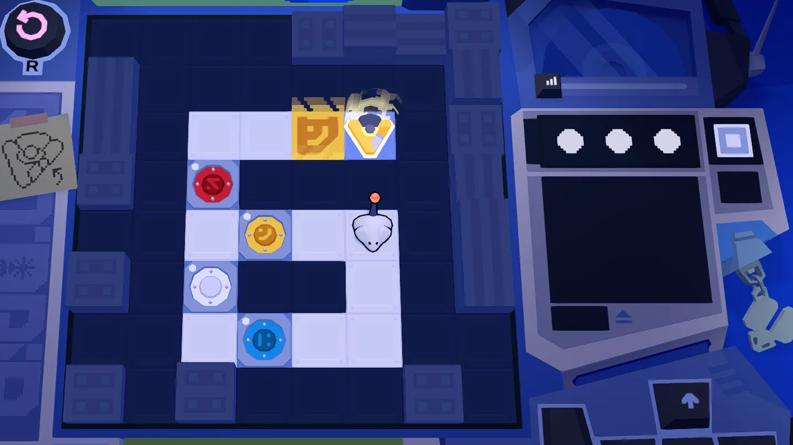
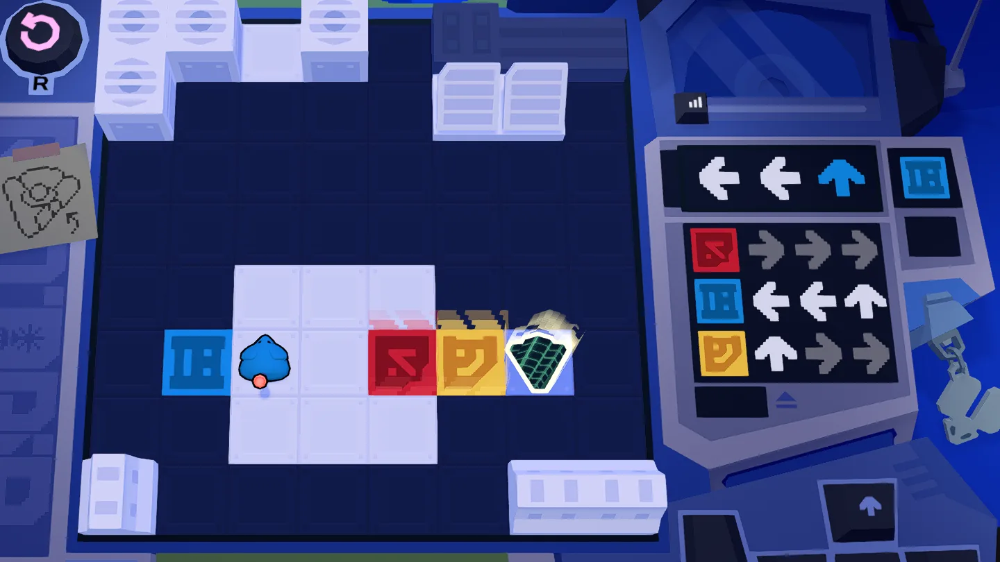
- Shift tiles force a color change; each works once
- Color morph: a listed combo of valid moves changes the player's color
- Shift tiles, color morph and firewalls in one level
- 01PROBLEM
- The jam version had 12 levels on 3 mechanics, with steep difficulty jumps
- At 120+ levels, difficulty had to rise without levels just getting longer
- 02DECISION
- Difficulty comes from mechanics reacting to each other, not from length
- Teaching levels cover one idea; mastery levels combine everything learned
- Filler moves were cut: challenging, not tedious
- 03RESULT
- The puzzles stood out: "How did you design them?" was the question I heard most
- At conventions, most players kept solving until their time ran out
02 / 05
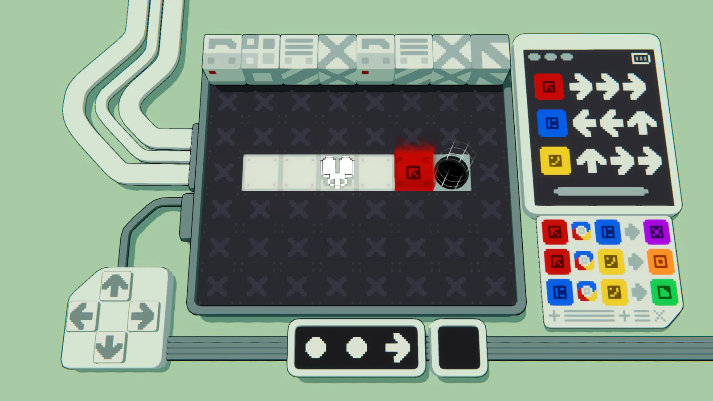
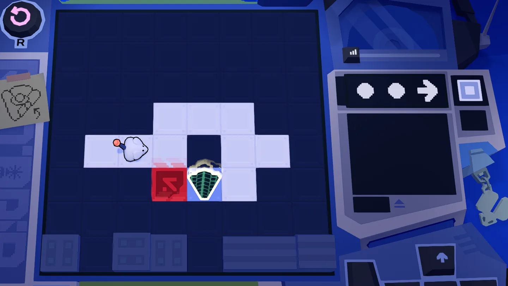
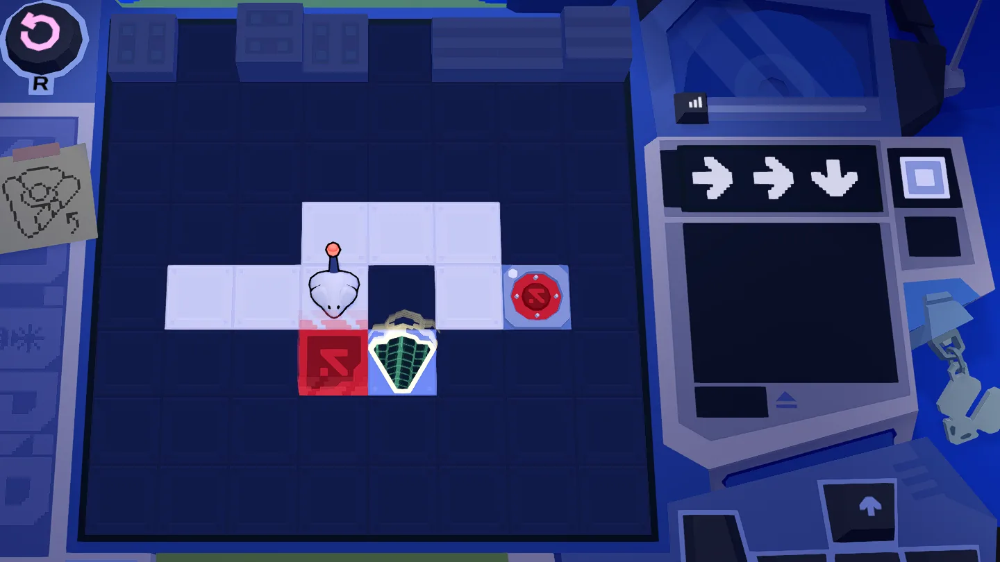
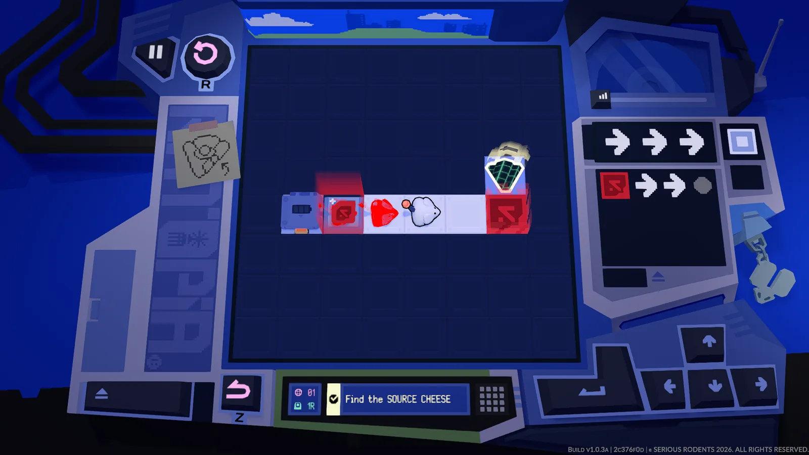
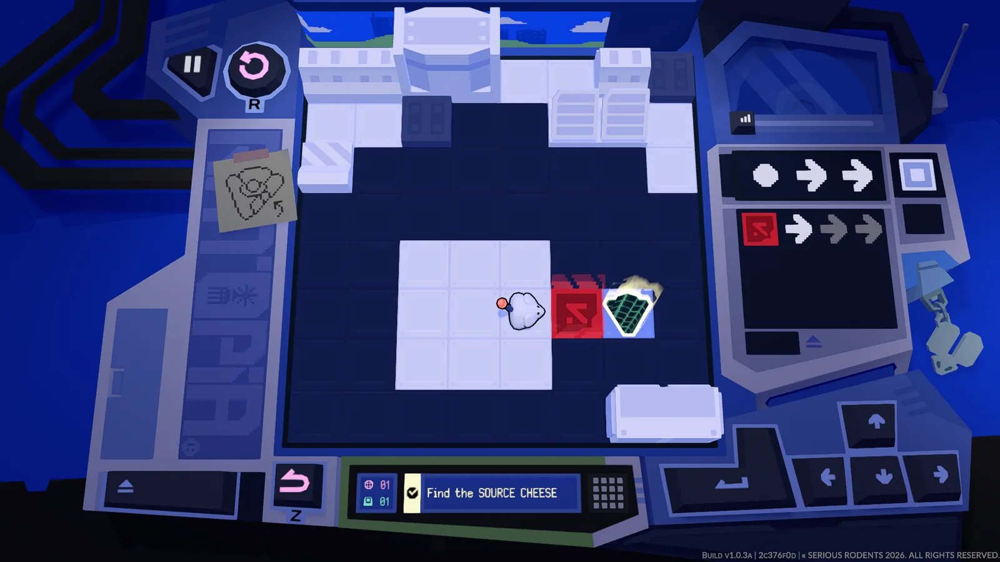
- Every combo and color formula shown from level 1, nothing introduced
- The first firewall appears before players can pass one
- A red shift tile is the only way through
- Players enter the red combo themselves, guided by holograms
- Building it themselves makes the combo feel like their own
- Step 4 matches the difficulty of the jam's first level
- 01PROBLEM
- The jam version dropped players in with no introduction
- Unlike pushing boxes in Sokoban, the rules were new to most players
- 02DECISION
- No text: level layouts teach the rules
- Each obstacle appears before its solution, so players see why they need it
- Every new mechanic gets a simple practice level; combinations come later
- 03RESULT
- Most players grasped the core rule on level 2
- The tutorial drew far more praise than the jam's
03 / 05
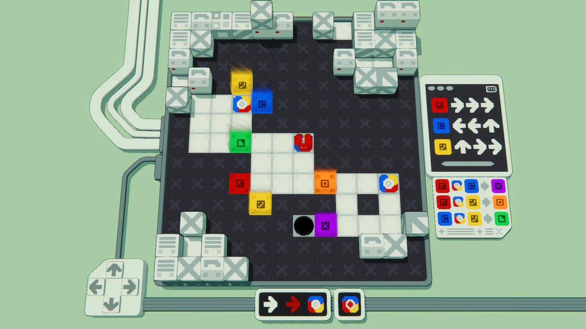
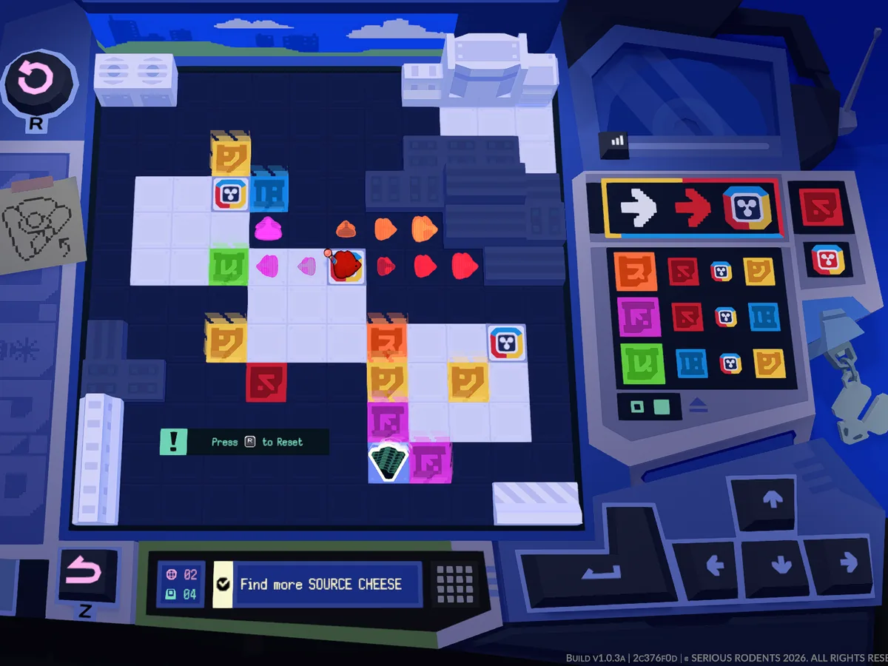
- A fixed formula sheet: the jam's only help with mixing
- The console's main panel reacts to the player's moves
- Holograms show where the player's color will change
- State indicators show the current color and the mix in progress
- 01PROBLEM
- The jam's only player aid was a fixed formula sheet
- Invalid moves gave no reason, so the game felt abstract
- 02DECISION
- Reworked the in-world console to react to the player
- Holograms preview where the player's color will change
- Invalid moves show the color the player would have turned
- 03RESULT
- Playtesters learned the mechanics without outside help
04 / 05
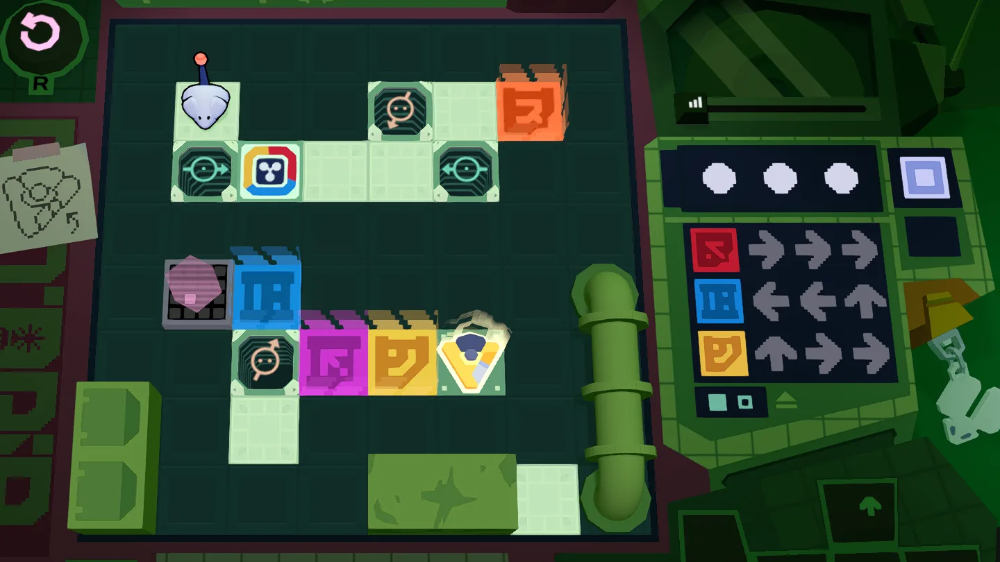
- A World 4 level: several mechanics at once
My first commercial release showed me how wide real players' skill range is. I now design for the player from the start: challenging for experts, easy to pick up for beginners.
05 / 05